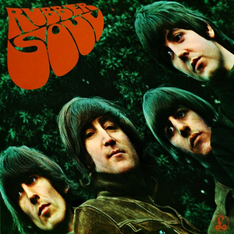
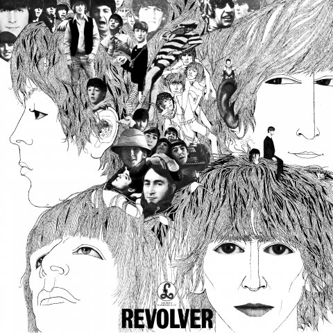
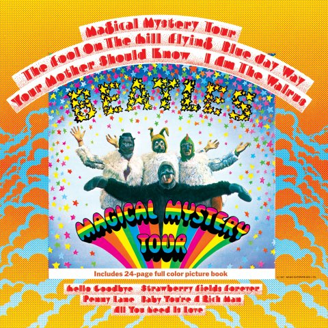
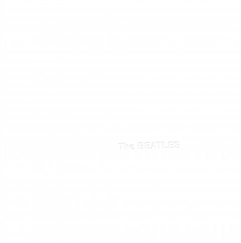
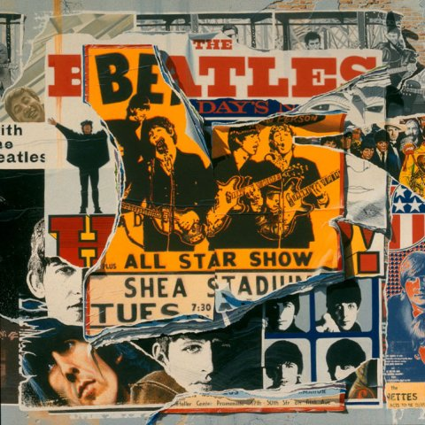
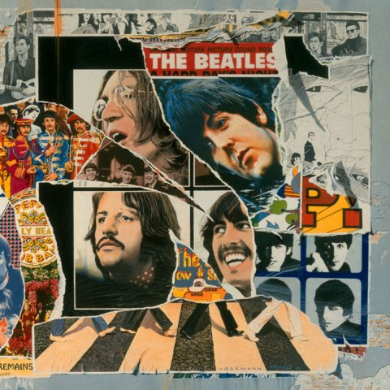

Please Please Me - 22 de marzo 1963With The Beatles - 22 de noviembre 1963A Hard Day's Night - 10 de julio 1964Beatles For Sale - 4 de diciembre 1964Help - 4 de agosto 1965

Rubber Soul - 3 de diciembre 1965

Revolver - 5 de agosto 1966Sgt Pepper's Lonely Hearts Club Band - 1 de junio 1967

Magical Mystery Tour - 27 de noviembre 1967

The Beatles - 22 de noviembre 1968Yellow Submarine - 17 de enero 1969Abbey Road - 26 de septiembre 1969Let It Be - 8 de mayo 1970The Beatles Antology 1 - 20 de noviembre 1995

The Beatles Antology 2 - 18 de marzo 1996

The Beatles Antology 3 - 28 de octubre 1996